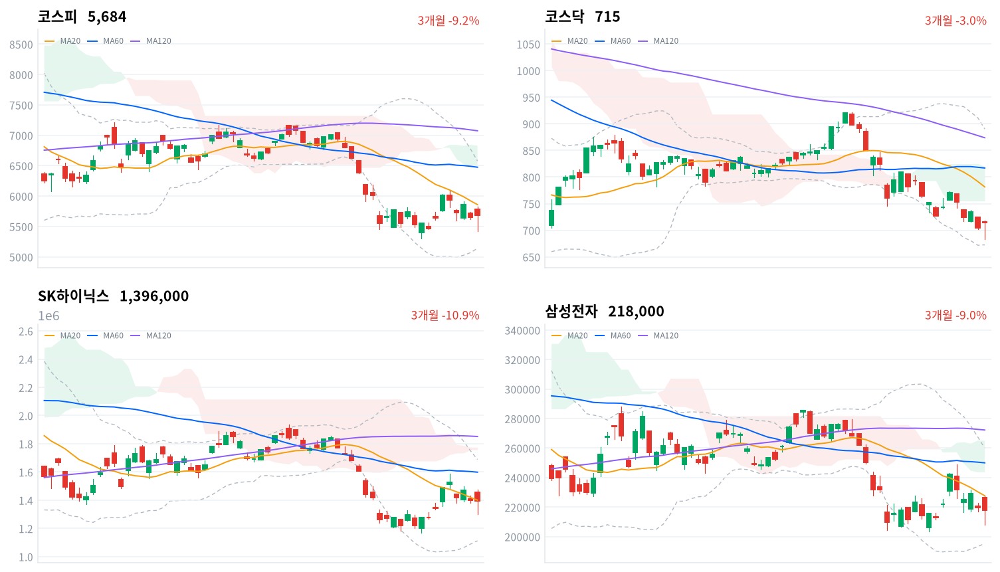

미국 중간선거에서 민주당이 상·하원을 확보하고 데이터센터 규제를 내건 주지사 후보들이 이겼다는 보도에 반도체 대형주가 밀리며, 코스피는 장중 5,422까지 내렸다. 외국인이 2조4,841억원을 순매도했지만 개인과 기관이 각각 1조원 넘게 사들여 지수는 5,683.80으로 마감했다(당일 잠정).
같은 날 태양광·2차전지는 미국 친환경 정책 기대에 급등했다(한화솔루션 +18.64%, 삼성SDI +11.57%). 외국인 매도가 멈추는지는 11월 5일 정규장에서, 반도체 수요 판단은 11월 6일 종가에서 확인한다.
미국 중간선거(11월 3일 현지)에서 민주당이 상·하원 다수당을 확보했고, 텍사스·조지아·오하이오에서는 데이터센터 착공 제한을 요구해 온 민주당 후보가 주지사에 당선됐다는 보도가 한국 정규장 중에 나왔다. 반도체 대형주가 밀리며 코스피는 장중 4.02% 하락까지 갔다가 오후에 반등했다. 외국인은 2조4,841억원을 순매도했고, 개인(1조986억원)과 기관(1조394억원)이 그 대부분을 받아 냈다(당일 잠정).
장 마감 뒤 보도는 하락을 민주당이 AI 데이터센터 규제를 강화하면 빅테크 설비투자가 늦어지고 HBM 같은 서버용 메모리 수요가 둔화될 수 있다는 우려로 설명한다. 하락의 계기에 대한 이 설명에는 동의한다. 다만 이 매도는 메모리 수요 전망의 하향보다 미국 정책 불확실성에 따른 위험 축소로 판단한다. 직전 11월 3일 미국 장 마감 뒤 AMD는 4분기 데이터센터 매출이 전분기보다 50% 늘 것이라고 제시했고, 데이터센터 착공 지연과 서버·메모리 발주 취소는 구분해야 한다는 증권가 지적도 나왔다. 규제가 실제 입법으로 이어질 가능성을 시장가격으로 잴 수 있는 자료는 없다.
업종 안에서 약했던 것은 반도체 대형 두 종목이다. 반도체와반도체장비 업종은 0.29% 올랐고 업종 안 오른 종목 비율은 79%였다(삼성전자 -0.68%, 한미반도체 +3.39%). 매도가 외국인 보유가 많은 대형주에 몰린 이 모습은 위험 축소 해석과 부합한다. 데이터센터 착공 지연이 내년 서버·메모리 발주를 줄인다는 판단을 시장이 미리 반영하기 시작했을 수도 있으나, 그 판단을 받칠 주 정부 입법이나 빅테크의 투자 축소 발표는 아직 없다. 두 설명은 주 정부의 데이터센터 규제 입법, 빅테크의 설비투자 언급, 메모리 가격 자료로 구분할 수 있다. 개인과 기관이 각각 1조원 넘게 사고 2차전지·태양광이 급등한 조합은 국내 매수가 반도체 대형주 저가 매수와 친환경 관련주로 나뉘었다는 해석과 부합한다. 다만 업종별 순매매 자료가 없어 어느 쪽에 얼마가 갔는지는 알 수 없다.
새로 제안할 상품은 없다. 이날 한국 장은 반도체·AI 하드웨어 업종에 수요 근거(AMD 전망)와 새 정책 위험을 함께 보여 줬고, 어느 한쪽으로 판단을 바꿀 근거는 되지 못한다. 하루 반등만으로 외국인 매도의 흐름이 바뀌었다고 보기도 이르다. 태양광·2차전지 급등은 의회 교체가 법과 이익으로 이어지기 전의 테마 매수로 본다. 새 의회는 내년 1월에 출범하고, 트럼프 대통령이 거부권으로 의회 법안을 막을 수 있다는 분석도 나왔다. 폴리실리콘 가격 상승과 미국 ESS 수주처럼 선거와 무관한 실적 재료가 재평가를 앞당겼을 수도 있어, 이 판단은 한화솔루션의 코스피 대비 성과로 확인한다. 가장 가까운 결정적 일정은 11월 5일 정규장의 외국인 코스피 순매수 방향이다.
코스피가 11월 4일 기준 20일 저점 5,306 아래에서 마감하면, 국내 자금이 외국인 매도를 받아 지수 하단을 지킨다는 오늘 판단을 철회한다. 이 선은 이날 장중 저점보다도 아래에 있어, 종가로 내주면 국내 매수가 외국인 매도를 더는 받아 내지 못한다는 뜻이다. 그 경우 외국인 매도가 다시 지수 방향을 좌우한다고 본다.
출처: CNBC, 헤럴드경제, 서울경제, AMD
직전 11월 3일 미국 세션에서 나스닥은 0.83%, S&P500은 0.36% 올랐고 다우는 0.38% 내렸다. 필라델피아 반도체지수는 2.63% 올랐다는 보도가 나왔다. 이날 아시아에서는 상해종합(+2.16%)과 항셍(+1.67%)이 오른 반면 대만가권(-0.83%)과 닛케이(-1.42%)는 내렸다. 코스피는 네 지수 평균보다 0.22%포인트 강했다.
코스피는 전일 종가 5,649보다 높은 5,786에서 갭 상승으로 출발해 장 초반 5,828까지 올랐다. 한국 정규장 동안 S&P500 선물은 0.05%, 나스닥 선물은 0.24% 올라 첫 봉과 마지막 봉 사이로는 거의 움직이지 않았다. 다만 개표 중 한때 나스닥100 선물이 2.1% 밀렸다는 보도가 있어, 미국 선물도 장중에는 선거 결과에 흔들렸다.
하루 범위(5,422~5,828)로 보면 코스피는 3분의 2 지점 부근에서 마감해 장중 낙폭을 대부분 되찾았다. 코스닥은 장중 700선을 내줬다가 고점 바로 아래에서 끝났다. 원/달러는 장 초반 고점에서 내려와, 외국인의 대규모 매도에도 원화는 약해지지 않았다.
외국인이 반도체 대형주를 팔고 개인과 기관이 받아 낸 날이다. 오후 반등에는 AI 규제가 일부 전력 관련 환경세 부과 수준에 그칠 것이라는 분석이 퍼진 것과 연기금 중심의 기관 매수가 함께 들어왔다는 보도가 나왔다. 앞의 분석은 누가 냈는지 확인되지 않았다. 시간외 거래 자료는 없어 장 마감 뒤 흐름은 확인하지 못했다.
출처: 뉴스1, CNBC, 헤럴드경제, 굿모닝경제
미국 선거 결과에 장중 크게 흔들린 두 지수는 모두 올라 마감했다. 코스피는 0.62% 오른 5,684, 코스닥은 1.50% 오른 714.95로 마감했다. 장중 4% 넘게 밀렸던 코스피는 종가로 전날 하락분 일부를 되찾았지만 5,700선 아래에 머물렀고, 코스닥은 장중 내준 700선을 되찾았다.
| 지수 | 종가 | 등락률 | 시가 | 고가 | 저가 | 전일 종가 |
|---|---|---|---|---|---|---|
| 코스피 | 5,683.80 | +0.62% | 5,786.13 | 5,828.13 | 5,421.72 | 5,648.79 |
| 코스닥 | 714.95 | +1.50% | 715.74 | 718.34 | 683.66 | 704.39 |
하락은 오후 1시 무렵 멈췄다. 코스피는 13:00 무렵 5,438까지 밀려 있다가 14:00에 5,565로 올라섰고, 저점 부근에서 끝난 전날과 달리 오후 매수가 마감까지 이어졌다.
| 주체 | 순매수(억원) |
|---|---|
| 개인 | +10,986 |
| 외국인 | -24,841 |
| 기관 | +10,394 |
| 주체 | 순매수(억원) |
|---|---|
| 개인 | -574 |
| 외국인 | +15 |
| 기관 | +678 |
외국인 매도를 개인과 기관이 나눠 받았다. 외국인은 코스피에서 2조4,841억원을 순매도해(전일 1조5,086억원 순매도, 당일 잠정) 4거래일째 팔았고, 규모는 10월 22일 이후 가장 컸다. 개인은 1조986억원(전일 1조6,388억원), 기관은 1조394억원(전일 4,941억원 순매도)을 순매수했다.
전날과 달라진 것은 기관이다. 개인 혼자 외국인 매도를 받던 전날과 달리 기관이 매수로 돌아섰고, 오후 반등에 연기금 중심의 기관 매수가 들어왔다는 보도가 나왔다. 외국인 순매도는 SK하이닉스(1조1,657억원)와 삼성전자(8,083억원)에 몰렸다는 집계도 나왔다. 매체마다 집계 시점이 달라 보도된 외국인 합계(2조5천억원 안팎)는 표와 다르다. 전일 값도 이날 다시 받은 잠정치라 지난 글의 외국인 1조5,165억원·기관 5,022억원 순매도와 조금 다르다.
코스닥에서는 세 주체 모두 순매수 규모가 1천억원을 넘지 않아 수급이 한쪽으로 쏠리지 않았다. 기관이 678억원을 샀고 개인은 574억원을 팔았다.
장중 누적 수급과 프로그램 매매는 받을 수 있는 자료가 없어 싣지 않는다.
출처: 굿모닝경제, 뉴스1, 서울경제
| 순위 | 종목/ETF | 구분 | 거래대금 | 비고 |
|---|---|---|---|---|
| 1 | SK하이닉스 | 개별주 | 6.12조원 | - |
| 2 | 삼성전자 | 개별주 | 4.62조원 | - |
| 3 | 반도체 테마 ETF | 테마·롱 | 2.64조원 | 29종 합산 |
| 4 | 삼성전기 | 개별주 | 0.91조원 | - |
| 5 | SK스퀘어 | 개별주 | 0.71조원 | - |
| 6 | 삼성SDI | 개별주 | 0.69조원 | - |
| 7 | 2차전지 테마 ETF | 테마·롱 | 0.67조원 | 14종 합산 |
| 8 | 한화솔루션 | 개별주 | 0.66조원 | - |
| 9 | 삼성전자우 | 개별주 | 0.66조원 | - |
| 10 | KODEX CD금리액티브(합성) | 단기금리·현금성 | 0.48조원 | - |
단위 백만원 원본을 조 단위로 환산했다. 같은 기초자산 ETF는 방향별로, 같은 테마 섹터 ETF는 테마별로 묶고 지수·해외 ETF는 제외했다.
거래는 반도체에 몰렸지만 두 대형주의 주가는 거의 움직이지 않았다. SK하이닉스(6.12조원)·삼성전자(4.62조원)·반도체 테마 ETF 29종 합산(2.64조원)이 1~3위였고, 두 종목은 1% 안쪽으로 내렸다. 장중 급락과 반등이 한 세션에 겹쳐 사고판 양이 함께 커졌고, 거래대금만으로는 순유입인지 순유출인지 알 수 없다.
그 밖에서는 이날 급등한 2차전지·태양광이 상위에 들었다. 삼성SDI(0.69조원), 2차전지 테마 ETF 14종 합산(0.67조원), 한화솔루션(0.66조원)이 6~8위였다. 단기금리 상품인 KODEX CD금리액티브(합성)(0.48조원)가 마지막 줄에 들었고, 표 안에 인버스 상품은 없었다.
대형 반도체주가 약했던 날에도 상승은 넓었다. 대표 ETF 기준 12개 섹터 가운데 조선(-0.66%)만 내렸고, 2차전지(+7.81%)가 가장 많이 올랐다. 반도체 섹터는 하루 1.97% 올랐지만 1주 기준으로는 10.32% 내려 여전히 가장 약하다.
업종 단위로는 친환경·2차전지가 폭넓게 주도했다. 에너지장비및서비스(+12.90%)는 35종목 중 25종목, 전기제품(+6.96%)은 68종목 중 59종목이 올랐다. 화학(+6.00%)도 122종목 중 94종목이 올랐다. 반도체와반도체장비는 0.29% 오르는 데 그쳤지만 오른 종목 비율은 79%로, 업종 등락률을 누른 것은 대형 두 종목이다. 제약(+3.47%)은 174종목 중 106종목이 올라 상승이 상대적으로 좁았다.
반도체 대형주는 장중 크게 밀렸다가 낙폭을 거의 지웠다(삼성전자 -0.68%, SK하이닉스 -0.14%). 미국 중간선거 뒤 AI 데이터센터 규제 우려로 외국인이 두 종목을 대거 팔면서 장중 낙폭이 6~7%까지 커졌다는 보도가 나왔다.
2차전지 대형주가 급등했다(삼성SDI +11.57%, LG에너지솔루션 +5.03%, 엘앤에프 +12.84%). 민주당의 의회 확보로 미국 친환경 정책 수혜 기대가 커진 데다 삼성SDI의 미국 ESS 수주 확대가 겹쳤다는 보도가 나왔다. 급등을 직접 설명하는 공시는 확인되지 않았다.
태양광·풍력주가 가장 크게 올랐다(한화솔루션 +18.64%, HD현대에너지솔루션 +12.47%, 씨에스윈드 +7.59%, SK이터닉스 +8.06%). 미국 「블루웨이브」로 친환경 정책이 넓어진다는 기대에 매수세가 몰렸다는 보도가 나왔고, 한화솔루션 급등을 직접 설명하는 호재는 명시되지 않았다는 보도도 함께 나왔다.
한진칼은 상한가였던 전날에 이어 또 올랐다(한진칼 +5.19%). 호반그룹과 한진그룹의 경영권 지분 경쟁이 이어졌고, 이날 한진칼우가 장중 상한가를 기록했다는 보도가 나왔다. 최대주주 변경 여부는 확인되지 않았다.
화학 업종에서는 두 종목이 두 자릿수로 올랐다(OCI홀딩스 +10.38%, 포스코퓨처엠 +10.81%). OCI홀딩스는 미국 중간선거 결과와 비중국산 폴리실리콘 가격 상승이 재료로 꼽혔다는 보도가 나왔다. 포스코퓨처엠은 3분기 영업이익이 시장 예상의 4.6배였다는 실적이 재료였지만, 고객사 보상금이 영업이익의 61%를 차지하는 일회성이라는 지적도 나왔다.
묶음 밖에서는 하이브(-11.48%)가 크게 내렸고 한국항공우주(+11.82%)·LG유플러스(+7.11%)는 크게 올랐다. 세 종목 모두 확인된 재료는 없다. 셀트리온(+5.32%)과 삼성바이오로직스(+2.96%)는 민주당 승리의 수혜로 헬스케어를 꼽은 증권가 해석과 같은 방향으로 움직였다.
출처: 뉴스1, 헤럴드경제, 와이드경제, CBC뉴스, 재경일보, 아주경제, 중앙이코노미뉴스, 서울경제, 매일경제
국고채 금리는 단기와 장기가 함께 내렸고, 10년물은 4% 아래로 내려왔다. 3년물은 2.2bp 내린 3.714%, 10년물은 3.3bp 내린 3.968%로 마감했다.
| 지표 | 금리 | 전일比(bp) | 기준일 |
|---|---|---|---|
| 국고채 3년 | 3.714% | -2.2 | 2026-11-04 |
| 국고채 10년 | 3.968% | -3.3 | 2026-11-04 |
| CD 91일 | 3.34% | -1.0 | 2026-11-04 |
| 회사채 AA- 3년 | 4.400% | -2.2 | 2026-11-04 |
| 한국은행 기준금리 | 3.00% | 0.0 | 2026-09 |
한국은행 경제통계시스템(ECOS) 기준. 기준금리는 2026년 9월 기준 값이다.
커브는 조금 더 평평해졌다. 10년물과 3년물의 차이는 25.4bp로 1.1bp 좁아졌고, 최근 2년(533거래일) 가운데 좁은 쪽 25% 안이다. 미국 10년물 금리가 4.90%로 내렸다는 보도가 있어, 국내 장기물 하락은 직전 미국 세션의 금리 하락과 방향이 같다.
신용 금리차는 그대로였다. 회사채 AA- 3년물도 2.2bp 내려 국고채 3년물과의 차이는 68.6bp에서 움직이지 않았고, 최근 2년(533거래일) 가운데 넓은 쪽 11% 안에 머물렀다. 주식이 장중 급락한 날에도 기업 신용 위험에 매겨진 값은 더 높아지지 않았다. 3년물과 기준금리의 차이는 71.4bp로 최근 2년(533거래일)의 한가운데쯤이다.
출처: 서울경제
| 미국 참조 지수 | 구분 | 관측 | 등락률 | 업종 내 상승 비율 | 기준일 |
|---|---|---|---|---|---|
| 반도체·AI 하드웨어 | 업종 | 반도체와반도체장비 | +0.29% | 79% | 11/4 |
| 반도체·AI 하드웨어 | 종목 | SK하이닉스 | -0.14% | – | 11/4 |
| 반도체·AI 하드웨어 | 종목 | 삼성전자 | -0.68% | – | 11/4 |
| 반도체·AI 하드웨어 | 지수 | 대만가권 | -0.83% | – | 11/4 |
| 전력망 | 업종 | 전기장비 | +2.81% | 83% | 11/4 |
| 전력망 | 업종 | 전기제품 | +6.96% | 87% | 11/4 |
| 전력망 | 종목 | HD현대일렉트릭 | -0.11% | – | 11/4 |
| 전력망 | 종목 | LS ELECTRIC | -0.53% | – | 11/4 |
| 전력망 | 종목 | 효성중공업 | +3.96% | – | 11/4 |
| 방산 | 업종 | 우주항공과국방 | +1.81% | 69% | 11/4 |
| 방산 | 종목 | 한화에어로스페이스 | -0.68% | – | 11/4 |
| 방산 | 종목 | 현대로템 | +3.76% | – | 11/4 |
| 산업재 | 업종 | 기계 | +1.46% | 72% | 11/4 |
| 산업재 | 종목 | HD현대중공업 | -1.39% | – | 11/4 |
| 산업재 | 종목 | 한화오션 | -1.86% | – | 11/4 |
| 산업재 | 종목 | 삼성중공업 | +1.04% | – | 11/4 |
| 금속·광업 | 업종 | 철강 | +3.00% | 62% | 11/4 |
| 금속·광업 | 업종 | 비철금속 | +2.96% | 57% | 11/4 |
| 금속·광업 | 종목 | POSCO홀딩스 | +3.56% | – | 11/4 |
| 금융 | 업종 | 은행 | +1.59% | 91% | 11/4 |
| 금융 | 업종 | 증권 | +0.78% | 59% | 11/4 |
| 금융 | 종목 | KB금융 | +0.07% | – | 11/4 |
| 금융 | 종목 | 신한지주 | +0.82% | – | 11/4 |
| 소프트웨어 | 업종 | IT서비스 | +1.35% | 49% | 11/4 |
| 소프트웨어 | 종목 | NAVER | +1.07% | – | 11/4 |
| 에너지 | 업종 | 석유와가스 | +3.33% | 63% | 11/4 |
| 에너지 | 종목 | SK이노베이션 | +3.86% | – | 11/4 |
| 일본 | 지수 | 닛케이 | -1.42% | – | 11/4 |
| 중국 | 지수 | 항셍 | +1.67% | – | 11/4 |
| 중국 | 지수 | 상해종합 | +2.16% | – | 11/4 |
원/달러는 한국장 시간대에 09:00 고점 1,347원에서 11:30 저점 1,336원까지 내렸고, 15:30 마지막 값은 1,342원이었다(서울 외환시장 공식 종가 아님). 코스피가 오전에 급락하던 시간대에 원화는 오히려 가장 강했고, 외국인의 2조원대 주식 매도도 원화 약세로 번지지 않았다. 해외주식 펀드의 대기 자금이 달러를 사는 비용은 1,340원 안팎에서 크게 달라지지 않았고, 원화 현금의 참고 금리는 소폭 내렸다.
AI 하드웨어에서는 한국 반도체 대형주가 장중 크게 밀렸다가 낙폭을 거의 지웠고(SK하이닉스 -0.14%, 삼성전자 -0.68%) 대만가권도 내렸다. 미국 반도체·AI 하드웨어 업종은 AMD 호실적과 데이터센터 규제 위험을 함께 안고 정규장을 맞는다. 전력망은 한국 전력기기 대형주가 거의 오르지 못했다(HD현대일렉트릭 -0.11%, LS ELECTRIC -0.53%, 효성중공업 +3.96%). 전기제품 업종의 급등(+6.96%)은 2차전지 종목이 만든 것이라 전력망 투자 테마와는 구분해 읽어야 한다. 데이터센터 착공 제한은 전력망 투자 테마의 수요 가운데 데이터센터 몫에 닿는 위험이다.
민주당이 상·하원 다수당을 확보했다는 보도가 나왔고, 알래스카·미시시피·네브래스카 등 일부 상원 경합은 보도 시점에 확정되지 않았다. 텍사스 주지사에는 데이터센터 개발 제한을 공약한 민주당 지나 이노호사 후보가 당선됐고, 조지아·오하이오의 민주당 당선인도 데이터센터 착공 중단을 요구해 왔다. Wells Fargo는 계획된 데이터센터 용량의 27%가 텍사스에 있다고 집계했다.
주 정부가 데이터센터 인허가를 늦추면 빅테크의 데이터센터 건설 일정이 밀리고, 그 일정이 서버·메모리 발주 시점을 정한다. 유안타증권은 착공 지연과 발주 취소를 구분해야 한다고 지적했고, 발주가 줄었다는 자료는 아직 없다. 연방 차원에서 JPMorgan은 데이터센터 제한과 법인·고소득층 증세를 기술주의 역풍으로, 헬스케어·청정에너지를 상대적 수혜로 꼽았다. 친환경 세액공제나 보조금 확대는 법이나 행정조치가 나와야 기업 이익에 닿는다.
이날 태양광·2차전지와 헬스케어는 오르고 반도체 대형주는 약해 이 해석과 같은 방향이었다. 다음 분기점은 미확정 상원 경합의 확정과 텍사스 등 주 단위 데이터센터 규제 입법이며, 일정은 미확정이다. 이달 중순 중국 선전에서 열리는 APEC 정상회의에서 미·일 정상회담이 성사될지도 미국 정책 방향에 닿는 일정이다.
11월 3일(현지) 브렌트유 12월물은 1.12% 내린 103.60달러, WTI는 0.38% 내린 96.09달러로 2거래일 연속 내렸다는 보도가 나왔다. 카타르가 중재하는 간접협상이 진전됐다는 보도와 미국의 제한적 군사작전이 이어진다는 보도가 함께 나왔다. 11월 4일 이란 의회의장 갈리바프는 선거 결과를 미국 국민의 전쟁 반대로 해석하며 트럼프 행정부에 경고했다.
유가가 낮게 머물면 정유사는 재고평가 이익이 줄고, 항공사는 연료비 부담이 준다. 이날은 정유주가 전날 급락 뒤 일부 반등했고(SK이노베이션 +3.86%) 항공사 업종도 2.07% 올라, 유가 방향만으로는 두 업종의 움직임이 설명되지 않는다. 다음 분기점은 협상 타결이나 결렬 보도이며, 일정은 미확정이다.
올해 마지막 금통위는 11월 26일이다. 한국은행은 10월 22일 기준금리를 연 3.00%로 동결하며 「추가 인상 시기와 속도」 문구를 유지했고, 11월 인상 전망은 엇갈린다는 보도가 나왔다. 이날 국고채 3년물이 내려, 채권시장은 인상 기대를 키우지 않았다. 다음 분기점은 11월 26일 결정이다.
출처: CBS, CNBC, 헤럴드경제, 뉴스1, 뉴스핌, 겟뉴스, 노컷뉴스, 파이낸셜뉴스, 비즈워치
코스피가 11월 3일 기준 20일 이동평균 5,923 아래인 5,684에서 마감해, 외국인 매도가 지수 방향을 좌우한다는 11월 3일 판단은 유효하다. 기다린 조건이던 11월 4일 정규장의 외국인 순매수 방향은 2조4,841억원 순매도(당일 잠정)로 판단과 같은 방향이었다. 다만 지수는 그 매도에도 개인·기관 매수로 올라, 국내 기관 매수가 하단을 하루 받치는 데 그친다는 부분은 해석을 수정한다. 또 하나의 기다린 조건인 AMD 실적은 11월 4일(미국 시간)로 적었지만 실제로는 11월 3일(미국 시간) 장 마감 뒤 나왔고, 데이터센터 전망은 수요가 유지된다는 쪽이었다. 사전에 정한 SK하이닉스 상대 수익률 검증은 지수 판단과 별개로 11월 6일 종가까지 이어 간다.
| 판단(세운 날) | 오늘 결과 | 상태 |
|---|---|---|
| 반도체 급락은 수요 재평가보다 심리 충격(10월 30일) | SK하이닉스−코스피 -0.73%포인트 | 판단 보류 — 11월 6일 종가 |
| 두산에너빌리티 하락은 체코 결렬 과잉 반응(10월 29일) | 두산에너빌리티−코스피 -2.78%포인트 | 판단 보류 — 11월 5일 종가 |
| 조선 반등은 낙폭 과대 되돌림(11월 2일) | 한화오션−코스피 -0.83%포인트 | 판단 보류 — 11월 9일 종가 |
| 정유주 급락은 협상 타결 기대의 선반영(11월 3일) | S-Oil 이날 종가 없음 | 판단 보류 — 11월 10일 종가 |
| 친환경주 급등은 하루 테마 매수(11월 4일) | 한화솔루션 28,000원(+18.64%) | 새로 세움 — 11월 11일 종가 |
10월 30일에 세운 반도체 판단에는 양쪽 근거가 함께 들어왔다. AMD의 데이터센터 전망은 수요가 꺾이지 않았다는 쪽을 뒷받침했지만, 미국 주 정부의 데이터센터 규제라는 새 위험이 생겼다. 10월 30일 KRX 종가 대비 SK하이닉스는 1.55% 내려 코스피(-0.82%)보다 0.73%포인트 약했고, 미리 정한 범위 안이라 판단을 보류한다.
두산에너빌리티 판단(10월 29일)은 전날 넘었던 철회 기준 안으로 돌아왔다. 10월 29일 KRX 종가 대비 두산에너빌리티는 7.05% 내려 코스피(-4.28%)보다 2.78%포인트 약했다. 체코 관련 새 자료가 없고 기준 부근에서 하루 단위로 오가고 있어, 원전 수출 기대의 재평가와 과잉 반응을 이날 자료로는 구분하기 어렵다.
조선 판단(11월 2일)은 전날의 우위를 잃었다. 11월 2일 KRX 종가 대비 한화오션은 3.83% 내려 코스피(-2.99%)보다 0.83%포인트 약했지만, 차이가 미리 정한 범위 안이라 판단을 보류한다. 이날 조선은 지수 반등에서 빠졌다(HD한국조선해양 -1.56%, 삼성중공업 +1.04%).
정유주 판단(11월 3일)은 S-Oil의 이날 종가 자료가 없어 코스피와 비교하지 못했다. 국제유가가 더 내렸고 협상도 타결되지 않아 판단을 바꿀 새 근거는 없다.
친환경주 판단(11월 4일)은 오늘 세웠다. 출발점은 11월 4일 KRX 종가 한화솔루션 28,000원, 코스피 5,684다. 11월 4일 KRX 종가 대비 11월 11일 KRX 종가 기준 한화솔루션 수익률이 코스피 수익률보다 3%포인트 넘게 낮으면 하루 테마 매수라는 해석을 뒷받침한다. 같은 폭 넘게 높으면 실적·수주가 받치는 재평가를 더 설득력 있는 설명으로 보고 이 판단을 철회하며, 차이가 그 범위 안이면 어느 쪽으로도 판단하지 않고 닫는다. 한 종목의 수익률로 재는 기준이라 태양광 업종 전체의 움직임은 반영하지 못한다.
| 항목 | 계산 | 결과 |
|---|---|---|
| SK하이닉스 − 코스피(10월 30일→11월 4일 종가) | (1,396,000 ÷ 1,418,000 − 5,683.80 ÷ 5,730.74) × 100 | −0.73%포인트 |
| 두산에너빌리티 − 코스피(10월 29일→11월 4일 종가) | (52,700 ÷ 56,700 − 5,683.80 ÷ 5,937.66) × 100 | −2.78%포인트 |
| 한화오션 − 코스피(11월 2일→11월 4일 종가) | (52,800 ÷ 54,900 − 5,683.80 ÷ 5,859.08) × 100 | −0.83%포인트 |
| 시점 | 확인할 것 | 가르는 판단 |
|---|---|---|
| 11월 5일(한국 정규장) | 외국인 코스피 순매수 방향 | 국내 자금이 하단을 계속 받치는가 |
| 11월 5일 종가 | 두산에너빌리티−코스피 수익률 차(10월 29일 대비) | 체코 결렬 과잉 반응인가 |
| 11월 6일 종가 | SK하이닉스−코스피 수익률 차(10월 30일 대비) | 심리 충격인가, 수요 재평가인가 |
| 11월 9일 종가 | 한화오션−코스피 수익률 차(11월 2일 대비) | 낙폭 과대 되돌림인가 |
| 11월 10일 종가 | S-Oil−코스피 수익률 차(11월 3일 대비) | 협상 기대 선반영인가 |
| 11월 11일 종가 | 한화솔루션−코스피 수익률 차(11월 4일 대비) | 테마 매수인가, 실적 재평가인가 |
11월 26일 금통위와 미국 주 단위 데이터센터 규제 입법(일정 미확정)도 같은 판단들에 닿는다.

코스피·코스닥·SK하이닉스·삼성전자 3개월 일봉에 이동평균(20·60·120)·볼린저밴드·일목균형표 구름대를 겹쳐 그렸다. 상승 캔들은 녹색, 하락 캔들은 적색이다.
| 자산 | 위치(이평·구름) | 가까운 저항 | 가까운 지지 |
|---|---|---|---|
| 코스피 | 세 이동평균·구름 아래(역배열) | 전환선 5,703 → 20일선 5,860 | 20일 저점 5,306 |
| 코스닥 | 세 이동평균·구름 아래(역배열) | 전환선 728 → 구름 하단 755 | 20일 저점 684 → 볼린저 하단 673 |
| SK하이닉스 | 20일선 바로 아래·구름 아래(역배열) | 20일선 140만원 → 기준선 151만원 | 전환선 138만원 |
| 삼성전자 | 전환선·구름 아래(역배열) | 전환선 22만6천원 → 20일선 22만8천원 | 20일 저점 20만3,500원 |
이날 종가는 전환선(5,703) 바로 아래라, 코스피는 세 이동평균과 구름 아래 역배열에 남았다. 위로는 전환선과 20일선(5,860)을 차례로 되찾아야 하락 추세가 멈췄다고 볼 수 있고, 아래로는 이날 장중 저점 밑의 20일 저점(5,306)이 가장 가까운 지지다. 코스닥은 이날 저점(684)으로 20일 저점을 새로 썼다.
위 레벨은 이동평균·볼린저밴드·일목균형표와 스윙 고저를 기계적으로 계산한 값이며 투자 권유가 아니다.
오늘 요약할 뉴스는 미국 중간선거 뒤의 코스피 급등락과 AI 투자 위험, 실적과 목표주가 조정, 선거 결과에 대한 일본·러시아·이란의 반응에 모였다.
“당분간 변동성 이어져…외인 수급·美금리·실적이 반등 변수”서울경제 · 11월 4일
코스피는 미국 중간선거에서 민주당이 승리한 뒤 4일 장중 한때 4% 넘게 밀리다 낙폭을 만회하고 0.62% 오른 5683.80에 마감했다. 외국인은 이날 2조 4998억 원을 순매도해 이달 순매도 규모가 4조 4042억 원에 달했고, 7개월째 팔자 기조가 이어지고 있다. 증권가는 민주당이 AI 데이터센터 규제를 강화하면 빅테크의 설비투자가 늦어져 HBM 등 AI 서버용 반도체 수요가 둔화될 수 있다고 우려한다. 반면 미래에셋증권 박연주 리서치센터장은 미국의 AI 투자 흐름이 쉽게 꺾이지 않고 반도체 공급도 부족하다며 고성능 반도체의 중요성이 커질 것으로 봤다. 미국 10년물 국채금리는 4.90%로 내리고 달러인덱스는 9월 말 이후 최저 수준을 나타냈으나, 전문가들은 금리와 환율 하락이 아직 기조적 방향성으로 확인되지 않았다고 신중한 입장이다.
'400조원 실탄' 장착한 삼전닉스, 채권시장 큰손으로 급부상매일경제 · 11월 4일
반도체 호황으로 쌓인 현금이 국내 채권시장의 새로운 변수로 떠올랐다. KB증권 분석에 따르면 올해 말 순현금은 삼성전자 210조원, SK하이닉스 181조원으로, 지난해 말 대비 각각 2배, 16배 이상 불어날 전망이다. 두 회사가 올해 주주환원에 각각 100조원 안팎을 써도 큰 자금이 남아 운용 방식에 따라 채권 수급이 흔들릴 수 있다. SK하이닉스는 자산운용사 6곳에 3조원을 맡겼고 이 중 9000억원이 집행됐다. 위탁 자금은 AA급 이상 여전채 위주로 투자되며, 지난달 말 여전채 3년물 금리는 국고채 3년물보다 0.59%포인트 높았다. 다만 12월 국고채 2년물 발행이 1조원 미만이라 연내 국채 투자는 어려울 것으로 보인다.
“AI 투자 멈추면 한국 큰 충격” 블룸버그, GDP 3% 증발 경고 [투자360]헤럴드경제 · 11월 4일
블룸버그 이코노믹스의 톰 오를릭 수석이코노미스트는 금융투자협회 웨비나(11월 4일)에서 AI 인프라 투자가 1년간 중단되고 미국 증시가 20% 하락하며 신용스프레드가 확대되는 상황을 가정한 분석을 내놓았다. 블룸버그의 시나리오 도구 '글로벌 쇼크'로 추산한 결과, 한국의 GDP 감소폭은 기준 전망 대비 약 3%, 대만은 약 5%였다. 오를릭은 시장이 AI 관련주를 가리지 않고 사던 단계에서 벗어나 자본지출의 수익성을 따지기 시작했다고 진단했다. 반도체 공급망의 핵심인 한국과 대만은 이런 위험에 특히 취약하며, 데이터센터 투자가 위축되면 반도체 수요와 수출에 충격이 번질 수 있다는 것이다. 다만 권효성 블룸버그 이코노미스트는 규제를 피해 부지를 옮길 수 있어 데이터센터 수요가 급감하지는 않을 것이라고 반박했다.
영업익 기대치의 4.6배인데…포스코퓨처엠 목표가 놓고 證 ‘동상이몽’서울경제 · 11월 4일
포스코퓨처엠의 3분기 영업이익은 821억 원으로 전년 대비 23.2% 늘어 시장 예상치 179억 원의 4.6배를 기록했다. 이날 주가는 10.81% 오른 18만 1400원에 마감했다. 신한투자증권과 하나증권은 LFP 양극재 생산 확대와 내년 양극재 판매량 10만 톤 돌파 가능성을 근거로 목표주가를 각각 20만 원, 19만 6000원으로 올렸다. 반면 LS증권은 고객사 물량 미이행 보상금 약 500억 원이 영업이익의 61%를 차지해 일회성 성격이 강하다며 목표가를 14만 원으로 낮추고 보유 의견을 유지했다. 회사는 보상금의 규모와 향후 발생 가능성을 공개하지 않았다. 보상금 없이 본업에서 이익을 낼 수 있는지가 주가 방향을 가를 것으로 보인다.
수익성 먹구름 낀 현대차·기아…시총 13조 증발에 목표가도 ‘뚝’서울경제 · 11월 4일
현대차와 기아의 합산 시가총액이 올해 들어 13조 1197억 원(12.1%) 줄어 95조 843억 원으로 집계됐다. 같은 기간 코스피 시총 순위(우선주 제외)는 현대차가 5위에서 8위로, 기아가 10위에서 17위로 밀렸고 기아의 시총은 20.6% 급감했다. 현대차는 3분기 영업이익 2조 6770억 원으로 시장 전망치를 웃돌았으나, 연간 판매 목표와 영업이익률 전망이 함께 낮아졌고 환율과 일회성 비용 절감이 실적에 상당 부분 기여했다는 평가다. 기아의 3분기 영업이익은 약 1조 8180억 원으로 전망치를 22.9% 밑돌았는데, 전기차 판매 확대 과정에서 인센티브가 불어난 결과다. 골드만삭스는 기아의 투자의견을 중립으로 낮추고 목표가를 12만 원으로 내렸다.
K뷰티도 실적 눈높이 낮춘다…LG생건·에이피알 목표가 줄하향서울경제 · 11월 4일
LG생활건강과 에이피알의 목표주가가 증권가에서 잇따라 하향됐다. LG생활건강은 키움증권이 33만 원에서 28만 원으로 낮추고 투자의견을 매수에서 시장 수익률로 내렸으며, LS증권과 메리츠증권, NH투자증권도 목표가를 내렸다. 3분기 영업이익은 704억 원으로 52.4% 늘었지만 시장 기대치를 약 31% 밑돌았다. 화장품 부문이 109억 원 영업손실로 적자 전환한 데다, 중국 온라인 사업 재편과 북미 에이본 매각으로 해외 매출이 줄어 고정비 부담이 커진 탓이다. 에이피알은 해외 판매 확대로 분기 최대 매출을 기록했으나 원화 강세가 발목을 잡았다. 두 회사 모두 북미 판매와 사업 재편 성과가 실적으로 확인될 때까지 회복 속도는 불확실하다는 평가다.
“반도체보다 더 빠졌네”…바이오 투자 공식의 배신이데일리 · 11월 4일
4일 한국거래소 자료로 최근 6개월을 분석한 결과, KRX 300 헬스케어 지수는 27.97% 내려 KRX 반도체 지수(-13.72%)보다 낙폭이 컸고, 두 지수의 일간 등락률 상관계수는 0.36이었다. 이후 9월 30일부터 반도체가 25.83% 급락하는 동안 헬스케어는 3.93% 하락에 머물렀고, 셀트리온·삼성바이오로직스 등 실적이 확인된 대형주는 올랐다. 증권가는 AI 쏠림 완화 속에 이익 가시성을 갖춘 대형 바이오가 방어주 역할을 한다고 진단했다. 반면 한미약품은 16.5% 하락하고 펩트론은 하한가를 기록했다. 하나증권은 중소형 바이오텍으로 수급이 바로 번지기는 어렵다고 봤다.
테슬라·스페이스X 합병시 주식 안팔아도 양도소득세?…서학개미 비상연합뉴스 · 11월 4일
테슬라와 스페이스X의 합병 가능성이 거론되면서, 주식을 팔지 않아도 교환 과정에서 양도소득세가 발생할 수 있다는 우려가 커져 국내 서학개미들이 국회에 제도 개선을 청원했다. 지난달 22일 등록된 청원은 30일간 동의를 받으며, 4일 현재 약 2만7천150명이 동의한 상태다. 5만명 이상이 동의하면 국회 상임위원회에 회부된다. 청원인은 해외 기업의 합병이나 주식교환으로 보유 주식이 다른 주식으로 바뀌어도 실제 처분 전까지는 과세를 미뤄달라고 요구했다. 현행 제도에서는 이런 교환이 세법상 양도로 간주돼 차익에 세금이 부과될 수 있으며, 해외주식 양도차익은 연간 기본공제 250만원을 넘는 금액에 22% 세율이 적용된다. 한국예탁결제원에 따르면 지난 2일 기준 국내 투자자의 테슬라 보관금액은 약 233억달러로 해외주식 중 1위다.
“AI야, AI야, 가장 저평가된 반도체 종목이 뭐니?”…증권사 MTS ‘투자비서’ 경쟁매일경제 · 11월 4일
국내 증권사들이 모바일트레이딩시스템(MTS)에 인공지능을 접목해 종목 탐색부터 전략 검증, 주문까지 지원하는 'AI 투자비서' 경쟁에 나서고 있다. 메리츠증권은 지난 26일 AI와 연계해 국내외 시세와 보유자산을 조회하고 매매 주문을 요청할 수 있는 OPEN API를 정식 출시했으며, 실제 주문은 별도 설정과 확인 절차를 거치도록 했다. 신한투자증권은 이달 중 신한 SOL증권에 AI 조건검색 서비스를 선보여 과거 데이터로 전략 성과를 검증하는 기능을 더할 계획이다. 미래에셋증권은 통합 플랫폼 MAPS를 내놓고 AI 시황 요약을 2시간 간격으로 제공하고 있다. 다만 생성형 AI가 부정확한 정보를 낼 수 있어 AI 분석을 투자 정답으로 받아들이면 안 되며, 주문 전 고객 확인 같은 안전장치가 중요하다는 지적도 나온다.
[美중간선거]"트럼프 어떻게 나올지 예측 안돼 두려워" 日 긴장뉴스1 · 11월 4일
미국 중간선거에서 야당 민주당이 상·하원 모두 과반 의석을 확보하자 일본 정부가 파장에 주목하고 있다. 일본 FNN 보도에 따르면 정부 내에서는 결과를 예상했던 일로 받아들이는 차분한 분위기가 있으나, 다카이치 사나에 총리 주변에서는 트럼프 대통령의 향후 행보를 우려하는 목소리가 나온다. 일본 정부는 다카이치 총리와 트럼프 대통령의 관계를 고려해 외교·안보 분야에서 당장 큰 변화는 없을 것으로 보고 있다. 반면 민주당의 의회 장악으로 트럼프 대통령의 국정 운영이 제약되면서 미국의 국제적 영향력이 약화할 수 있다는 관측도 나온다. 이달 중순 중국 선전에서 열리는 APEC 정상회의에서 트럼프 대통령과 정상회담이 성사될지가 주요 관심사로 떠올랐다.
[올댓차이나] 3분기 홍콩 경제 5.2% 성장…수출 호조에 15분기 연속뉴시스 · 11월 4일
홍콩 통계처 발표에 따르면 2026년 3분기 홍콩 국내총생산(GDP) 속보치는 전년 동기 대비 5.2% 증가해 시장 예상치 3.7%를 크게 웃돌았다. 2분기 성장률 4.2%보다 확대됐고, 15분기 연속 성장세를 이어갔다. 성장은 상품 수출이 주도했다. 3분기 상품 수출액은 전년 동기보다 30.4% 급증해 2분기 28.9%보다 가속했고, 상품 수입도 29.9% 늘었다. 내수에서는 민간소비 증가율이 2.8%로 둔화된 반면 국내 고정자본형성은 7.3%로 확대됐다. 홍콩 정부는 AI 투자가 상품 수출을 계속 뒷받침할 것으로 보면서도 중동 지정학적 긴장과 주요 중앙은행의 통화긴축 정책은 주시해야 한다고 밝혔다. 같은 날 발표된 10월 민간 구매관리자지수(PMI)는 50.2로 전월보다 1.0포인트 올라 3개월 만에 경기확장 기준선을 회복했다.
"러, 美중간선거 후 트럼프 입지 약화 틈타 제재 완화 모색할 것"뉴스1 · 11월 4일
블룸버그 보도에 따르면 러시아가 미국 중간선거 이후 트럼프 대통령의 정치적 입지가 약화되면 대러 제재를 추가로 완화하는 방안을 모색할 것이라는 전망이 나왔다. 푸틴 대통령은 중간선거를 앞두고 트럼프 대통령과 러시아산 경유의 미국 공급에 합의했으며, 우크라이나 전쟁 종결 전이라도 미·러 경제협력을 먼저 추진하는 것이 목표라는 것이 크렘린궁 소식통의 설명이다. 크렘린궁은 트럼프 대통령이 러시아의 종전 조건을 우크라이나에 수용하도록 압박할 수 있다는 기대를 접고 공격을 강화하며 장기전에 대비하고 있다는 분석이 나온다. 미·러·우크라이나 3자 종전 실무협상은 지난 2월 말 이후 약 9개월 만에 10~11일 아랍에미리트 아부다비에서 재개될 예정이나, 푸틴 대통령은 점령지 처리 등 핵심 쟁점에서 물러설 뜻이 없는 것으로 알려졌다.
이란 "미국인들은 선거에서 전쟁 반대 선택"…트럼프에 공개 경고노컷뉴스 · 11월 4일
갈리바프 이란 의회 의장은 4일 SNS를 통해 미국 중간선거에서 공화당이 패배한 결과를 미국 국민의 전쟁 반대 여론이 반영된 것으로 해석하고, 이를 지지한다고 밝혔다. 그는 미국 정부가 국민의 뜻을 저버리고 '국제적 돈줄과 협박 세력'에 봉사한다면 이란의 반대에 '악몽'이 뒤따를 것이라고 트럼프 행정부에 경고했다. 다만 그가 지목한 세력이 누구인지는 구체적으로 드러나지 않았다. 과거 발언과 대미 비판 기조를 감안하면 미국 정치권에 영향력을 행사하는 친이스라엘 세력과 이스라엘 정부를 겨냥했을 가능성이 제기된다는 해석이 나온다. 이번 발언은 미국과 이란의 종전 협상이 진행되는 가운데 나와, 이란이 중간선거 결과를 대미 외교와 정치적 메시지에 활용하려는 움직임으로 풀이된다.